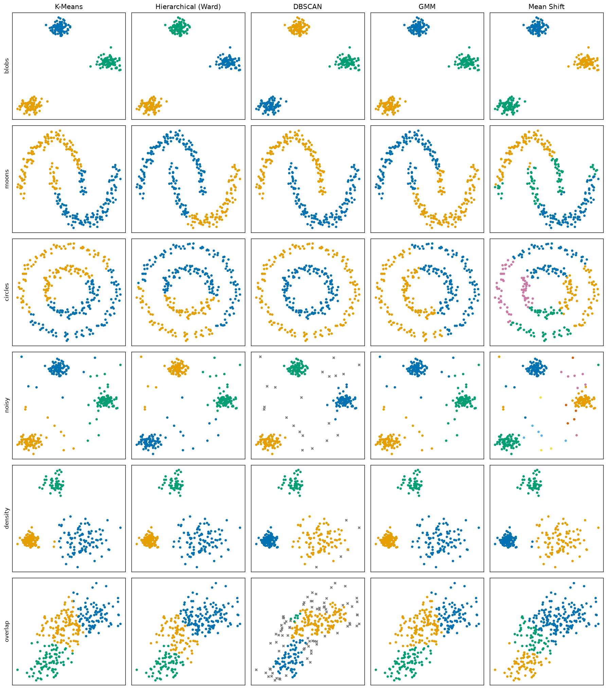
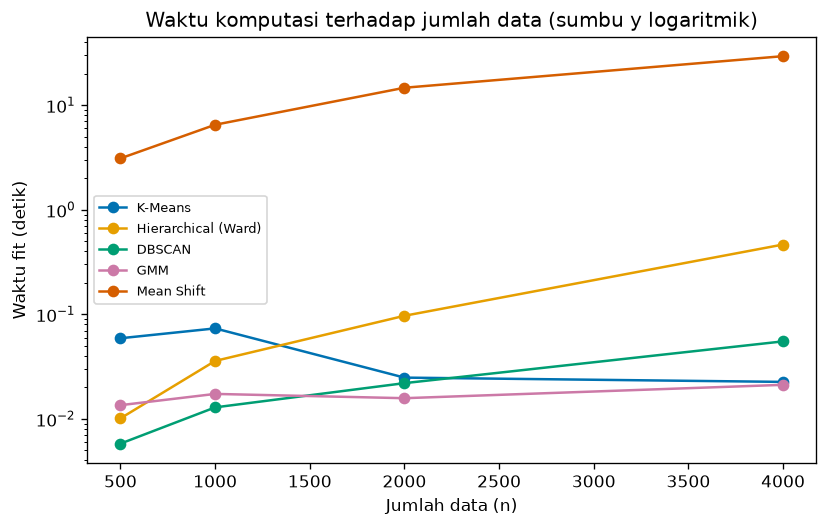
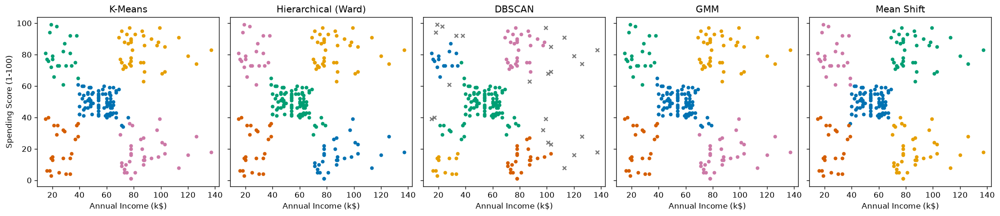

Bab 7 — Comparison of Clustering Algorithms¶
Learning Objectives¶
Setelah mempelajari bab ini, kamu mampu:
- Menjelaskan mengapa algoritma clustering perlu dibandingkan, dan apa yang tidak bisa dinilai dari satu gambar.
- Meninjau ulang prinsip kerja K-Means, Hierarchical, DBSCAN, GMM, dan Mean Shift.
- Membandingkan asumsi, bentuk kelompok, penanganan kepadatan dan noise, serta kebutuhan parameter tiap algoritma.
- Membandingkan kompleksitas dan skalabilitas secara konseptual dan lewat pengukuran sederhana.
- Membedakan hard clustering dan soft clustering pada kelima algoritma.
- Menjalankan eksperimen yang adil: satu dataset, kelima algoritma, hasil dibaca secara visual.
- Menyusun dan memakai panduan keputusan memilih algoritma.
- Mengenali kesalahpahaman umum tentang perbandingan algoritma.
- Menyiapkan hasil eksperimen untuk evaluasi formal di Level 5.
Introduction¶
Setelah lima bab, kamu sudah mengenal lima alat. Pertanyaan berikutnya yang paling praktis: alat mana yang kupakai untuk dataku? Tidak ada jawaban satu kalimat. Jawabannya bergantung pada bentuk kelompok, ada tidaknya noise, kepadatan, ukuran data, dan apa yang kamu butuhkan dari hasilnya (peluang? pohon? pusat kelompok?).
Bab ini mengumpulkan semuanya. Kita menjalankan kelima algoritma pada enam dataset yang masing-masing dirancang untuk menonjolkan satu situasi: gerombol bersih, bentuk melengkung, noise, kepadatan berbeda, dan tumpang tindih. Hasilnya dibaca lewat gambar dan tabel, lalu kita susun panduan keputusan.
Bab ini perbandingan, bukan evaluasi
Kita membandingkan perilaku algoritma: bentuk yang ditemukan, noise yang ditandai, jumlah kelompok, kecepatan. Kita tidak menghitung skor kualitas apa pun. Pertanyaan "hasil mana yang lebih baik secara terukur?" adalah materi Level 5 (Clustering Evaluation). Di sini, penilaian "terlihat sesuai bentuk data" bersifat visual dan hanya mungkin karena datanya sintetis dan kita tahu strukturnya.
Prasyarat
Bab 1 sampai 6 Level 4: Bab 1, K-Means, Hierarchical, DBSCAN, GMM, dan Mean Shift.
Fundamental Concepts¶
| Istilah | Arti |
|---|---|
| Perbandingan yang adil | Semua algoritma dijalankan pada data yang sama, dengan skala yang sama, dan pengaturan yang dijelaskan secara terbuka |
| Asumsi (assumption) | Hal yang dianggap benar oleh sebuah algoritma tentang data, misalnya "kelompok berbentuk bulat" |
| Convex cluster | Kelompok "gumpalan": garis lurus antara dua anggotanya tetap berada di dalam kelompok |
| Hard / soft clustering | Satu label per titik / peluang untuk tiap kelompok |
| Skalabilitas | Bagaimana biaya (waktu, memori) naik saat jumlah data naik |
| Hyperparameter | Pengaturan yang kamu tentukan sebelum algoritma berjalan (K, eps, bandwidth, dan seterusnya) |
| Decision guide | Panduan langkah yang menuntun pemilihan algoritma dari karakter data dan kebutuhan |
Detailed Explanation¶
Mengapa membandingkan algoritma?¶
Tiga alasan:
- Tidak ada algoritma terbaik untuk semua data. Seperti yang kita lihat sejak Bab 1: tiap algoritma mengasumsikan definisi "kelompok" tertentu, dan definisi itu cocok untuk sebagian data saja.
- Hasil sering tidak bisa dibandingkan hanya lewat jumlah kelompok atau ukuran kelompok. Dua algoritma bisa menghasilkan kelompok berukuran sama (misalnya 150 dan 150) tetapi memotong data dengan cara yang sangat berbeda. Kita perlu melihatnya.
- Perbandingan menunjukkan apa yang algoritma andalkan. Dengan memahami mengapa sebuah algoritma gagal pada suatu dataset, kamu belajar mengenali kapan hal serupa mengancam datamu sendiri.
Tinjauan singkat lima algoritma¶
| Algoritma | Ide dalam satu kalimat | Pengaturan utama | Hasil |
|---|---|---|---|
| K-Means (Bab 2) | Titik masuk ke centroid terdekat, centroid = rata-rata anggota, diulang | n_clusters |
Label + centroid |
| Hierarchical (Bab 3) | Gabungkan dua kelompok terdekat berulang membentuk pohon, lalu potong | n_clusters atau distance_threshold, linkage |
Label (dan dendrogram) |
| DBSCAN (Bab 4) | Kelompok = daerah padat yang tersambung, titik di daerah jarang = noise | eps, min_samples |
Label (noise = -1) |
| GMM (Bab 5) | Data berasal dari campuran Gaussian, diperkirakan dengan EM | n_components, covariance_type |
Peluang + label |
| Mean Shift (Bab 6) | Titik menanjak ke puncak kepadatan | bandwidth |
Label + pusat (puncak) |
Perbandingan asumsi dan bentuk kelompok¶
| Algoritma | Asumsi utama | Bentuk kelompok yang cocok |
|---|---|---|
| K-Means | Kelompok bulat, kompak, ukuran dan sebaran mirip | Bulat (convex) |
| Hierarchical (Ward) | Kelompok kompak, mirip K-Means (meminimalkan kenaikan WCSS) | Bulat |
| Hierarchical (single) | Kelompok tersambung rantai titik berdekatan | Bebas, memanjang (jika bersih dari noise) |
| DBSCAN | Kelompok = daerah padat dengan kepadatan kira-kira seragam | Bebas (melengkung, memanjang) |
| GMM | Tiap kelompok berdistribusi Gaussian | Elips (ukuran dan kemiringan bebas dengan full) |
| Mean Shift | Tiap kelompok membentuk satu "bukit" kepadatan | Bulat atau elips yang satu puncak |
Perbandingan penanganan kepadatan dan noise¶
| Algoritma | Kepadatan beragam | Noise dan pencilan |
|---|---|---|
| K-Means | Cukup baik jika kelompok bulat, tetapi ukuran dianggap mirip | Tidak mengenal noise. Semua titik dipaksa masuk kelompok, dan pencilan menarik centroid |
| Hierarchical | Bergantung linkage | Single peka (chaining). Ward dan complete juga ikut terpengaruh pencilan |
| DBSCAN | Lemah: satu eps untuk seluruh data |
Kuat: noise berlabel -1 |
| GMM | Cukup baik: tiap komponen punya kovarians dan bobot sendiri | Tidak mengenal noise. Pencilan memengaruhi kovarians |
| Mean Shift | Lemah: satu bandwidth untuk seluruh data |
Tidak mengenal noise. Pencilan bisa membentuk kelompok sendiri |
Perbandingan kebutuhan parameter¶
| Algoritma | Perlu menyebut jumlah kelompok? | Parameter utama dan kepekaannya |
|---|---|---|
| K-Means | Ya (n_clusters) |
K. Juga n_init dan random_state untuk stabilitas |
| Hierarchical | Tidak di awal (pilih sesudah melihat dendrogram), atau pakai distance_threshold |
linkage sangat menentukan |
| DBSCAN | Tidak | eps sangat peka, min_samples kurang peka. Wajib skala yang sama |
| GMM | Ya (n_components) |
covariance_type (jumlah parameter), n_init |
| Mean Shift | Tidak | bandwidth sangat peka |
Mengganti satu tebakan dengan tebakan lain
DBSCAN dan Mean Shift tidak meminta jumlah kelompok, tetapi meminta eps atau bandwidth. Kamu tetap harus memilih angka yang menentukan hasilnya. Hierarchical memindahkan keputusan ke "di mana memotong dendrogram".
Perbandingan kompleksitas dan skalabilitas (konseptual)¶
Notasi: \( n \) jumlah data, \( K \) jumlah kelompok, \( d \) jumlah fitur.
| Algoritma | Biaya utama | Skalabilitas terhadap \( n \) |
|---|---|---|
| K-Means | Satu iterasi sebanding \( n K d \) | Sangat baik |
| Hierarchical | Matriks jarak \( n \times n \): memori dan waktu minimal sekitar \( n^2 \) | Buruk untuk \( n \) besar |
| DBSCAN | Pencarian tetangga: mendekati \( n \log n \) dengan struktur pencarian (dimensi rendah), kasus terburuk mendekati \( n^2 \) | Baik, asal eps tidak terlalu besar |
| GMM | Satu iterasi EM sekitar \( n K d^2 \) untuk full |
Sedang. Mahal bila \( d \) besar |
| Mean Shift | Pencarian tetangga dari setiap seed secara berulang | Buruk, kecuali memakai bin_seeding |
Angka-angka ini adalah gambaran. Pengukuran nyata pada mesin kita ada di bagian Expected Output.
Hard clustering dan soft clustering¶
| Algoritma | Jenis | predict_proba? |
|---|---|---|
| K-Means | Hard | Tidak |
| Hierarchical | Hard | Tidak |
| DBSCAN | Hard (plus noise) | Tidak |
| GMM | Soft | Ya |
| Mean Shift | Hard | Tidak |
Hanya GMM yang memberi tahu seberapa yakin ia pada suatu label. Jika kamu butuh itu (misalnya untuk mengenali pelanggan "perbatasan"), GMM adalah pilihan utamanya. Untuk algoritma lain, keyakinan harus dinilai dengan cara lain (Level 5 dan 6).
Panduan memilih algoritma¶
Mulailah dari pertanyaan tentang datamu:
flowchart TD
A[Lihat data mentah<br/>dan skalakan fitur] --> B{Butuh peluang<br/>keanggotaan?}
B -- Ya --> C[GMM]
B -- Tidak --> D{Ada noise atau<br/>bentuk melengkung?}
D -- Ya --> E{Kepadatan kelompok<br/>kira-kira seragam?}
E -- Ya --> F[DBSCAN]
E -- Tidak --> G[DBSCAN dengan hati-hati,<br/>atau OPTICS dan HDBSCAN]
D -- Tidak --> H{Jumlah kelompok<br/>diketahui?}
H -- Ya --> I{Data besar?}
I -- Ya --> J[K-Means]
I -- Tidak --> K[K-Means atau Ward<br/>kelompok elips: GMM]
H -- Tidak --> L{Data kecil sampai sedang?}
L -- Ya --> M[Hierarchical dengan dendrogram<br/>atau Mean Shift]
L -- Tidak --> N[K-Means dengan beberapa K,<br/>atau DBSCAN]Panduan ini sengaja disederhanakan. Selalu coba lebih dari satu algoritma dan lihat hasilnya. Kita akan menuliskannya sebagai fungsi kode di bagian Python Implementation.
Kesalahpahaman umum¶
- "Ada algoritma terbaik." Tidak. Lihat grid perbandingan: tidak ada kolom yang unggul di semua baris.
- "K-Means cocok untuk semua data." Pada bulan sabit dan lingkaran bersarang ia memotong data.
- "DBSCAN tidak butuh parameter." Ia butuh
epsdanmin_samples, danepssangat menentukan. - "Mean Shift menemukan K otomatis jadi lebih objektif." Jumlah kelompok mengikuti
bandwidthyang kamu pilih. - "Kelompok berukuran sama berarti hasilnya sama." Pada moons, K-Means menghasilkan 150 dan 150 seperti DBSCAN, tetapi potongannya berbeda. Ukuran saja tidak cukup.
- "Dendrogram menentukan K secara objektif." Ia memberi petunjuk, dan pemotongan tetap keputusan kita.
- "GMM sama dengan K-Means." GMM adalah model probabilitas yang menghasilkan peluang dan memodelkan elips.
- "Hasil yang gambarnya rapi pasti benar." Gambar yang rapi tidak sama dengan hasil yang bermakna. Penilaian formal: Level 5.
- "Noise adalah kesalahan data." Noise DBSCAN adalah titik di daerah jarang menurut parameter yang dipilih.
- "Makin banyak kelompok makin baik." Banyak kelompok bisa berarti pecah, bukan terperinci.
Mathematical Foundation¶
Bab ini tidak memperkenalkan rumus baru. Berikut ringkasan kriteria tiap algoritma supaya perbedaannya terlihat dalam satu tempat. Semua simbol dijelaskan pada bab masing-masing.
| Algoritma | Yang diukur atau dioptimalkan | Rumus inti |
|---|---|---|
| K-Means | Jumlah kuadrat jarak titik ke centroid-nya (WCSS) | \( J = \sum_{k=1}^{K} \sum_{\mathbf{x}_i \in C_k} \lVert \mathbf{x}_i - \mu_k \rVert^2 \) |
| Ward | Kenaikan WCSS saat dua kelompok digabung | \( \Delta(A,B) = \frac{\lvert A \rvert \lvert B \rvert}{\lvert A \rvert + \lvert B \rvert} \lVert \mu_A - \mu_B \rVert^2 \) |
| Single, complete, average | Jarak antar kelompok: minimum, maksimum, rata-rata jarak antar pasangan | \( \min,\ \max,\ \text{rata-rata}\ d(a, b) \) |
| DBSCAN | Kepadatan lokal: titik adalah core jika lingkungan radius \( \varepsilon \) memuat sedikitnya MinPts titik | \( \lvert N_\varepsilon(\mathbf{p}) \rvert \ge \text{MinPts} \) |
| GMM | Log-likelihood data di bawah campuran Gaussian | \( \ell = \sum_i \log \sum_k \pi_k \mathcal{N}(\mathbf{x}_i \mid \mu_k, \Sigma_k) \) |
| Mean Shift | Posisi titik stasioner dari estimasi kepadatan | \( \mathbf{m}(\mathbf{x}) = \text{rata-rata tetangga} - \mathbf{x} = 0 \) |
Hubungan antar algoritma¶
- K-Means dan Ward sama-sama berbasis WCSS. K-Means meminimalkannya dengan langkah assignment dan update, dan Ward menggabungkan kelompok yang paling sedikit menaikkannya. Itu sebabnya hasil keduanya sering mirip pada gerombol bulat (grid blobs: keduanya sama).
- K-Means dan GMM: K-Means adalah kasus pembatas GMM dengan kovarians bulat yang sama dan varians menuju nol (Bab 5). GMM menggeneralisasi dengan peluang, bobot, dan kovarians bebas.
- DBSCAN dan Mean Shift sama-sama berbasis kepadatan, tetapi DBSCAN menyambung titik padat yang berdekatan (bentuk bebas), sedangkan Mean Shift mencari puncak kepadatan (satu kelompok = satu bukit).
Jumlah parameter sebagai ukuran fleksibilitas¶
Makin fleksibel sebuah model, makin banyak parameter yang harus diperkirakan dari data. Contoh pada \( K = 3 \) dan \( d = 2 \):
- K-Means: \( K d = 6 \) (koordinat centroid).
- GMM
full: bobot \( K - 1 = 2 \), rata-rata \( K d = 6 \), kovarians \( K \cdot d(d+1)/2 = 9 \), total 17. - GMM
spherical: bobot 2, rata-rata 6, kovarians \( K = 3 \), total 11.
Model yang lebih fleksibel (GMM full) dapat menyesuaikan diri dengan bentuk data yang lebih beragam, tetapi lebih berisiko pada data yang sedikit atau berdimensi tinggi.
Pertumbuhan biaya¶
Jika biaya naik sebanding \( n^2 \), mengalikan data dengan 4 mengalikan biaya dengan \( 4^2 = 16 \). Jika sebanding \( n \), biaya naik 4 kali. Kita akan membandingkan angka ini dengan rasio waktu yang kita ukur.
Python Implementation¶
Skrip lengkapnya ada di examples/level-4/07_comparison_of_clustering_algorithms.py, dan versi notebook-nya di notebooks/level-4/07-comparison-of-clustering-algorithms.ipynb.
Konteks masalah: menjalankan kelima algoritma pada data yang sama, melihat perbedaannya, mengukur kecepatan, lalu menyusun panduan pemilihan.
Dataset (semua sintetis dengan random_state=42, 300 titik, diskalakan dengan StandardScaler):
| Dataset | Sifat yang ditonjolkan | Mengapa cocok |
|---|---|---|
blobs |
Tiga gerombol bulat dan terpisah | Kasus "mudah" yang cocok untuk semua algoritma |
moons |
Dua bulan sabit | Bentuk non-konveks |
circles |
Dua lingkaran bersarang | Bentuk non-konveks yang lebih ekstrem |
noisy |
Tiga gerombol + 30 titik acak | Noise dan pencilan |
density |
Tiga gerombol dengan kepadatan berbeda (rapat, renggang, sedang) | Kepadatan beragam |
overlap |
Tiga elips miring yang saling tumpang tindih | Batas kelompok yang tidak tegas |
Ditambah Mall Customers sebagai contoh tabular nyata.
Pustaka: NumPy, pandas, Matplotlib, scikit-learn.
Bagian A — Siapkan alat¶
import time
import numpy as np
import pandas as pd
import matplotlib.pyplot as plt
from sklearn.cluster import KMeans, AgglomerativeClustering, DBSCAN, MeanShift, estimate_bandwidth
from sklearn.datasets import make_blobs, make_moons, make_circles
from sklearn.mixture import GaussianMixture
from sklearn.preprocessing import StandardScaler
Penjelasan: time dipakai untuk mengukur waktu. Kelima algoritma diimpor dari sklearn.cluster dan sklearn.mixture, dan tiga pembangkit data dari sklearn.datasets.
Bagian B — Enam dataset¶
rng = np.random.default_rng(42)
blobs_core, _ = make_blobs(n_samples=270, centers=3, cluster_std=0.8, random_state=42)
noise_points = rng.uniform(blobs_core.min(axis=0) - 1, blobs_core.max(axis=0) + 1, size=(30, 2))
overlap_raw, _ = make_blobs(n_samples=300, centers=[[0, 0], [3, 2], [1, 4]], cluster_std=1.1, random_state=42)
datasets = {
"blobs": make_blobs(n_samples=300, centers=3, cluster_std=0.8, random_state=42)[0],
"moons": make_moons(n_samples=300, noise=0.06, random_state=42)[0],
"circles": make_circles(n_samples=300, noise=0.05, factor=0.5, random_state=42)[0],
"noisy": np.vstack([blobs_core, noise_points]), # tiga gerombol + 30 titik acak
"density": make_blobs(n_samples=[150, 100, 50], centers=[[0, 0], [4, 0], [2, 5]],
cluster_std=[0.3, 1.0, 0.5], random_state=42)[0],
"overlap": overlap_raw @ np.array([[1.0, 0.6], [0.0, 0.8]]), # elips tumpang tindih
}
# Semua dataset diskalakan dulu (rata-rata 0, simpangan baku 1)
datasets = {name: StandardScaler().fit_transform(X) for name, X in datasets.items()}
print({name: X.shape for name, X in datasets.items()})
Penjelasan:
blobs_core(270 titik) dannoise_points(30 titik acak dari persegi panjang yang sedikit lebih luas dari data) dipakai untuk datasetnoisy.np.vstackmenumpuknya menjadi 300 titik.overlap_rawadalah tiga gerombol yang berdekatan (cluster_std=1.1).@ np.array([[1.0, 0.6], [0.0, 0.8]])adalah perkalian matriks yang memiringkan dan meregangkan data menjadi elips tumpang tindih.make_circles(..., factor=0.5)membuat dua lingkaran, yang dalam berjari-jari setengah yang luar.[0]mengambil data saja (label asli dibuang, karena ini clustering).- Kamus komprehensi
{name: StandardScaler().fit_transform(X) for ...}menskalakan tiap dataset. Skala yang sama untuk semua dataset penting supayaepsdanbandwidthbermakna.
Bagian C — Pengaturan tiap algoritma¶
# Jumlah kelompok untuk K-Means, Ward, dan GMM (kita tahu strukturnya karena data buatan)
n_clusters = {"blobs": 3, "moons": 2, "circles": 2, "noisy": 3, "density": 3, "overlap": 3}
# eps DBSCAN dipilih per dataset setelah melihat datanya (min_samples = 5 untuk semua)
eps_values = {"blobs": 0.3, "moons": 0.3, "circles": 0.4, "noisy": 0.3, "density": 0.4, "overlap": 0.2}
def build_models(name, X):
k = n_clusters[name]
bandwidth = estimate_bandwidth(X, quantile=0.2, random_state=42) # sama untuk semua dataset
return {
"K-Means": KMeans(n_clusters=k, n_init=10, random_state=42),
"Hierarchical (Ward)": AgglomerativeClustering(n_clusters=k, linkage="ward"),
"DBSCAN": DBSCAN(eps=eps_values[name], min_samples=5),
"GMM": GaussianMixture(n_components=k, covariance_type="full", n_init=5, random_state=42),
"Mean Shift": MeanShift(bandwidth=bandwidth),
}
settings = pd.DataFrame(
{"K (K-Means/Ward/GMM)": n_clusters, "eps DBSCAN": eps_values,
"bandwidth Mean Shift": {name: round(estimate_bandwidth(X, quantile=0.2, random_state=42), 3)
for name, X in datasets.items()}}
)
print(settings.to_string())
Penjelasan:
n_clustersmenyebut jumlah kelompok untuk K-Means, Ward, dan GMM. Kita tahu angkanya karena datanya buatan. Pada data nyata, angka ini adalah tebakan.eps_valuesadalahepsDBSCAN per dataset (denganmin_samples=5), dipilih setelah melihat datanya. Ini mirip dengan memilih K: DBSCAN pun memerlukan penyetelan.build_models(name, X)membuat kelima algoritma untuk satu dataset. Bandwidth Mean Shift dihitung otomatis denganestimate_bandwidth(quantile=0.2), sama untuk semua dataset, tanpa disetel per dataset. Dengan begitu kita melihat bagaimana ia berperilaku dengan pengaturan standar.settingsmencetak semua pengaturan dalam satu tabel supaya perbandingannya transparan.
Kesetaraan tidak sempurna
Perbandingan ini tidak sepenuhnya setara: K-Means, Ward, dan GMM diberi K yang benar, DBSCAN disetel eps-nya per dataset, dan Mean Shift memakai satu aturan tetap. Itulah kenyataan memakai algoritma yang berbeda. Hasil yang kita lihat adalah perilaku pada pengaturan yang masuk akal, bukan peringkat.
Bagian D — Menjalankan semua kombinasi¶
results = {} # (nama dataset, nama algoritma) -> label
for name, X in datasets.items():
for algo_name, model in build_models(name, X).items():
results[(name, algo_name)] = model.fit_predict(X)
Penjelasan: perulangan dua tingkat menjalankan 6 dataset × 5 algoritma = 30 percobaan. model.fit_predict(X) mengembalikan label, yang kita simpan dalam kamus dengan kunci (nama dataset, nama algoritma).
algo_names = list(build_models("blobs", datasets["blobs"]).keys())
rows = []
for name in datasets:
row = {"dataset": name}
for algo in algo_names:
labels = results[(name, algo)]
n_found = len(set(labels) - {-1})
n_noise = int(np.sum(labels == -1))
row[algo] = f"{n_found} kel" + (f", {n_noise} noise" if n_noise else "")
rows.append(row)
print(pd.DataFrame(rows).to_string(index=False))
Penjelasan: untuk tiap kombinasi kita menghitung jumlah kelompok (set(labels) - {-1}, tanpa menghitung noise) dan jumlah noise (np.sum(labels == -1)), lalu menyusunnya menjadi tabel. f-string f"{n_found} kel" + (...) menambahkan teks noise hanya jika ada.
palette = ["#0072B2", "#E69F00", "#009E73", "#CC79A7", "#D55E00", "#56B4E9", "#F0E442"]
fig, axes = plt.subplots(len(datasets), len(algo_names), figsize=(15, 17))
for row, (name, X) in enumerate(datasets.items()):
for col, algo in enumerate(algo_names):
ax = axes[row, col]
labels = results[(name, algo)]
for k in sorted(set(labels)):
mask = labels == k
if k == -1: # noise DBSCAN
ax.scatter(X[mask, 0], X[mask, 1], s=14, color="#777777", marker="x")
else:
ax.scatter(X[mask, 0], X[mask, 1], s=10, color=palette[k % len(palette)])
if row == 0:
ax.set_title(algo)
ax.set_xticks([])
ax.set_yticks([])
axes[row, 0].set_ylabel(name)
plt.tight_layout()
plt.show()
Penjelasan: grid 6 baris (dataset) × 5 kolom (algoritma). Tiap panel mewarnai titik menurut label. Noise DBSCAN digambar sebagai x abu-abu. axes[row, 0].set_ylabel(name) memberi nama dataset di sisi kiri, dan ax.set_title(algo) memberi nama algoritma di baris pertama.
Bagian E — Kemampuan objek dan soft clustering¶
X_demo = datasets["blobs"]
fitted = {algo: model.fit(X_demo) for algo, model in build_models("blobs", X_demo).items()}
rows = []
for algo, model in fitted.items():
rows.append(
{
"Algoritma": algo,
"labels_": hasattr(model, "labels_"),
"predict": hasattr(model, "predict"),
"predict_proba": hasattr(model, "predict_proba"),
"pusat kelompok": hasattr(model, "cluster_centers_") or hasattr(model, "means_"),
}
)
print(pd.DataFrame(rows).to_string(index=False))
Penjelasan: kita melatih kelima model pada dataset blobs (model.fit(X) mengembalikan model itu sendiri) dan memakai hasattr untuk memeriksa apakah tiap objek punya labels_, predict, predict_proba, dan pusat kelompok.
X_ov = datasets["overlap"]
gmm_ov = GaussianMixture(n_components=3, covariance_type="full", n_init=5, random_state=42).fit(X_ov)
proba_ov = gmm_ov.predict_proba(X_ov)
confidence = proba_ov.max(axis=1)
print("Peluang tiga titik pertama dataset overlap (GMM):")
print(pd.DataFrame(proba_ov[:3], columns=["p_0", "p_1", "p_2"]).round(3).to_string())
print(f"\nTitik dengan peluang tertinggi < 0.9 : {int((confidence < 0.9).sum())} dari {len(X_ov)}")
print(f"Titik dengan peluang tertinggi < 0.6 : {int((confidence < 0.6).sum())} dari {len(X_ov)}")
print("Pada K-Means, Ward, DBSCAN, dan Mean Shift: tidak ada predict_proba (hanya satu label per titik).")
Penjelasan: GMM full dilatih pada dataset overlap. predict_proba memberi peluang, dan confidence = proba_ov.max(axis=1) adalah peluang tertinggi tiap titik. Kita menghitung berapa titik yang keyakinannya di bawah 0,9 dan di bawah 0,6.
Bagian F — Skalabilitas¶
def best_time(make_model, X, repeats):
"""Waktu tercepat dari beberapa kali jalan (detik)."""
times = []
for _ in range(repeats):
model = make_model()
start = time.perf_counter()
model.fit(X)
times.append(time.perf_counter() - start)
return min(times)
factories = {
"K-Means": (lambda: KMeans(n_clusters=3, n_init=10, random_state=42), 3),
"Hierarchical (Ward)": (lambda: AgglomerativeClustering(n_clusters=3), 3),
"DBSCAN": (lambda: DBSCAN(eps=0.5), 3),
"GMM": (lambda: GaussianMixture(n_components=3, random_state=42), 3),
"Mean Shift": (lambda: MeanShift(bandwidth=2.0), 1), # lambat, cukup satu kali
}
# Pemanasan: jalankan sekali pada data kecil agar waktu pemuatan awal tidak ikut terhitung
X_warm, _ = make_blobs(n_samples=200, centers=3, random_state=0)
for make_model, _ in factories.values():
make_model().fit(X_warm)
sizes = [500, 1000, 2000, 4000]
timing = {algo: [] for algo in factories}
for n in sizes:
X_n, _ = make_blobs(n_samples=n, centers=3, cluster_std=1.0, random_state=42)
for algo, (make_model, repeats) in factories.items():
timing[algo].append(best_time(make_model, X_n, repeats))
table = pd.DataFrame(timing, index=sizes).round(3)
table.index.name = "n (jumlah data)"
print("Waktu fit (detik); angka bergantung mesin dan bisa berbeda tiap eksekusi:")
print(table.to_string())
print("\nRasio waktu saat n naik 4000/1000 (4 kali lipat data):")
print((table.loc[4000] / table.loc[1000]).round(1).to_string())
Penjelasan:
best_time(make_model, X, repeats)membuat model baru, mengukur waktufitdengantime.perf_counter()(jam presisi tinggi), mengulang beberapa kali, dan mengambil waktu tercepat. Waktu tercepat mengurangi gangguan proses lain di komputer.factoriesadalah kamus pembuat model (lambda: ...menunda pembuatannya) beserta jumlah ulangan. Mean Shift hanya diulang sekali karena lambat.- Pemanasan: sebelum mengukur, tiap algoritma dijalankan sekali pada data kecil supaya biaya sekali-jalan (pemuatan awal, dan sebagainya) tidak ikut terhitung.
- Perulangan mengukur waktu untuk \( n = 500, 1000, 2000, 4000 \).
make_blobs(n_samples=n, ...)membuat data tiap ukuran. - Tabel pandas mencetak semua waktu, dan
table.loc[4000] / table.loc[1000]menghitung rasio waktu ketika data naik 4 kali lipat.
Waktu bergantung mesin
Angka waktu berbeda di tiap komputer dan tiap eksekusi. Yang penting adalah polanya, bukan angka mutlaknya. Untuk waktu yang sangat kecil (sepersekian detik), hasilnya juga rawan gangguan.
fig, ax = plt.subplots(figsize=(7, 4.5))
for algo, color in zip(timing, palette):
ax.plot(sizes, timing[algo], marker="o", color=color, label=algo)
ax.set_xlabel("Jumlah data (n)")
ax.set_ylabel("Waktu fit (detik)")
ax.set_yscale("log")
ax.set_title("Waktu komputasi terhadap jumlah data (sumbu y logaritmik)")
ax.legend(fontsize=8)
plt.tight_layout()
plt.show()
Penjelasan: garis per algoritma. ax.set_yscale("log") memakai sumbu waktu logaritmik supaya algoritma cepat dan lambat terlihat dalam satu gambar.
Bagian G — Mall Customers¶
df = pd.read_csv("data/mall_customers.csv")
features = ["Annual Income (k$)", "Spending Score (1-100)"]
X_mall = StandardScaler().fit_transform(df[features])
bw_mall = estimate_bandwidth(X_mall, quantile=0.15, random_state=42)
mall_models = {
"K-Means": KMeans(n_clusters=5, n_init=10, random_state=42),
"Hierarchical (Ward)": AgglomerativeClustering(n_clusters=5, linkage="ward"),
"DBSCAN": DBSCAN(eps=0.4, min_samples=8),
"GMM": GaussianMixture(n_components=5, covariance_type="full", n_init=5, random_state=42),
"Mean Shift": MeanShift(bandwidth=bw_mall),
}
mall_labels = {algo: model.fit_predict(X_mall) for algo, model in mall_models.items()}
for algo, labels in mall_labels.items():
n_noise = int(np.sum(labels == -1))
sizes_found = sorted(np.bincount(labels[labels >= 0]).tolist(), reverse=True)
print(f"{algo:<20} {len(set(labels) - {-1})} kelompok, ukuran {sizes_found}, noise {n_noise}")
Penjelasan: fitur Mall Customers diskalakan, lalu kelima algoritma dijalankan dengan pengaturan dari bab masing-masing (K = 5; DBSCAN eps=0.4, min_samples=8; Mean Shift quantile=0.15). Kita mencetak jumlah kelompok, ukuran (tanpa noise), dan jumlah noise.
# Tabel silang: baris = label K-Means, kolom = label GMM (jumlah pelanggan di tiap sel)
print(pd.crosstab(mall_labels["K-Means"], mall_labels["GMM"], rownames=["K-Means"], colnames=["GMM"]))
Penjelasan: pd.crosstab(a, b) membuat tabel silang: berapa pelanggan yang diberi label i oleh K-Means dan label j oleh GMM. Karena nomor label sembarang, kita membaca pola (sel berisi angka besar) bukan nomornya. Tabel ini hanya menghitung, bukan skor kualitas.
fig, axes = plt.subplots(1, 5, figsize=(18, 4), sharex=True, sharey=True)
for ax, (algo, labels) in zip(axes, mall_labels.items()):
for k in sorted(set(labels)):
mask = labels == k
if k == -1:
ax.scatter(df.loc[mask, features[0]], df.loc[mask, features[1]], s=22, color="#777777", marker="x")
else:
ax.scatter(df.loc[mask, features[0]], df.loc[mask, features[1]], s=14, color=palette[k % len(palette)])
ax.set_title(algo)
ax.set_xlabel(features[0])
axes[0].set_ylabel(features[1])
plt.tight_layout()
plt.show()
Penjelasan: lima panel berdampingan, satu per algoritma, dengan sumbu bersama (sharex=True, sharey=True) supaya mudah dibandingkan.
Bagian H — Panduan keputusan sebagai kode¶
def suggest_algorithms(n_samples, know_k, shape, has_noise, need_probability, density_varies):
"""Panduan sederhana memilih algoritma. shape: 'bulat', 'elips', atau 'bebas'.
Ini aturan praktis untuk memulai percobaan, bukan hukum. Selalu coba lebih dari satu algoritma.
"""
suggestions = []
large = n_samples > 10_000
if need_probability:
suggestions.append(("GMM", "satu-satunya yang memberi peluang keanggotaan (soft clustering)"))
if shape == "bebas" or has_noise:
if density_varies:
suggestions.append(("DBSCAN (hati-hati)", "mengikuti bentuk bebas dan mengenal noise, tetapi satu eps sulit untuk kepadatan beragam"))
else:
suggestions.append(("DBSCAN", "mengikuti bentuk bebas dan menandai noise"))
if shape in ("bulat", "elips") and not has_noise:
if shape == "elips":
suggestions.append(("GMM (covariance_type='full')", "memodelkan elips berbagai ukuran dan kemiringan"))
if know_k:
suggestions.append(("K-Means", "cepat, mudah dijelaskan, cocok untuk kelompok bulat"))
if not large:
suggestions.append(("Hierarchical (Ward)", "dendrogram membantu memilih jumlah kelompok"))
if not know_k and not large and shape != "bebas":
suggestions.append(("Mean Shift", "jumlah kelompok mengikuti puncak kepadatan (pilih bandwidth dengan hati-hati)"))
if large:
suggestions.append(("(catatan)", "data besar: hindari Hierarchical dan Mean Shift tanpa bin_seeding; K-Means dan DBSCAN lebih skalabel"))
return suggestions
Penjelasan:
suggest_algorithms(...)menerima ciri data (jumlah data, apakah K diketahui, bentuk kelompok, ada noise, butuh peluang, kepadatan beragam) dan mengembalikan daftar saran beserta alasannya.large = n_samples > 10_000adalah ambang ilustrasi (garis bawah pada angka hanyalah pemisah ribuan agar mudah dibaca). Ambang sebenarnya bergantung pada mesin dan data.- Tiap
ifmenerjemahkan satu aturan dari diagram keputusan.suggestions.append((nama, alasan))menambahkan saran. - Fungsi ini sengaja sederhana dan transparan. Ia bukan pengganti percobaan, tetapi titik awal.
profiles = {
"Segmentasi pelanggan, 200 baris, kelompok bulat, K kira-kira 5": dict(
n_samples=200, know_k=True, shape="bulat", has_noise=False, need_probability=False, density_varies=False),
"Titik GPS 50.000 baris, bentuk bebas, ada titik tersesat": dict(
n_samples=50_000, know_k=False, shape="bebas", has_noise=True, need_probability=False, density_varies=False),
"Data pengukuran, elips tumpang tindih, butuh peluang": dict(
n_samples=1_000, know_k=True, shape="elips", has_noise=False, need_probability=True, density_varies=False),
"Data eksplorasi 800 baris, K tidak diketahui, kelompok bulat": dict(
n_samples=800, know_k=False, shape="bulat", has_noise=False, need_probability=False, density_varies=False),
}
for description, profile in profiles.items():
print(description)
for algo, reason in suggest_algorithms(**profile):
print(f" - {algo}: {reason}")
Penjelasan: empat profil data diberi nama dengan kamus, lalu suggest_algorithms(**profile) dipanggil (** membongkar kamus menjadi argumen bernama). Hasilnya dicetak per profil.
Code Explanation¶
| Bagian kode | Peran |
|---|---|
StandardScaler().fit_transform(X) untuk tiap dataset |
Skala sama agar eps dan bandwidth bermakna |
build_models(name, X) |
Satu tempat untuk pengaturan semua algoritma |
results[(dataset, algoritma)] |
Menyimpan 30 hasil untuk dibandingkan |
set(labels) - {-1} |
Jumlah kelompok tanpa menghitung noise |
hasattr(model, ...) |
Membandingkan kemampuan objek |
time.perf_counter() dan min(times) |
Mengukur waktu secara wajar |
pd.crosstab(a, b) |
Tabel silang dua pelabelan |
suggest_algorithms(...) |
Panduan keputusan berbasis aturan |
How to Run¶
Dari folder utama proyek (setelah mengaktifkan lingkungan virtual):
pip install -r requirements-notebooks.txt
python examples/level-4/07_comparison_of_clustering_algorithms.py
Skrip membutuhkan sekitar satu menit karena Mean Shift pada bagian skalabilitas lambat. Ia mencetak output ke terminal dan menyimpan tiga gambar ke docs/assets/level-4/. Notebook interaktifnya:
Output di bawah berasal dari eksekusi nyata dengan Python 3.14, NumPy 2.5.2, pandas 3.0.5, scikit-learn 1.9.0, dan Matplotlib 3.11.1. Angka waktu pada bagian skalabilitas akan berbeda di mesinmu.
Expected Output¶
{'blobs': (300, 2), 'moons': (300, 2), 'circles': (300, 2), 'noisy': (300, 2), 'density': (300, 2), 'overlap': (300, 2)}
K (K-Means/Ward/GMM) eps DBSCAN bandwidth Mean Shift
blobs 3 0.3 0.266
moons 2 0.3 0.952
circles 2 0.4 1.038
noisy 3 0.3 0.349
density 3 0.4 0.795
overlap 3 0.2 0.851
dataset K-Means Hierarchical (Ward) DBSCAN GMM Mean Shift
blobs 3 kel 3 kel 3 kel 3 kel 3 kel
moons 2 kel 2 kel 2 kel 2 kel 3 kel
circles 2 kel 2 kel 2 kel 2 kel 4 kel
noisy 3 kel 3 kel 3 kel, 21 noise 3 kel 16 kel
density 3 kel 3 kel 3 kel, 5 noise 3 kel 3 kel
overlap 3 kel 3 kel 3 kel, 80 noise 3 kel 3 kel
[gambar disimpan: docs/assets/level-4/07-perbandingan-algoritma.png]
Algoritma labels_ predict predict_proba pusat kelompok
K-Means True True False True
Hierarchical (Ward) True False False False
DBSCAN True False False False
GMM False True True True
Mean Shift True True False True
Peluang tiga titik pertama dataset overlap (GMM):
p_0 p_1 p_2
0 0.000 0.009 0.991
1 0.000 0.006 0.994
2 0.157 0.843 0.000
Titik dengan peluang tertinggi < 0.9 : 131 dari 300
Titik dengan peluang tertinggi < 0.6 : 24 dari 300
Pada K-Means, Ward, DBSCAN, dan Mean Shift: tidak ada predict_proba (hanya satu label per titik).
Waktu fit (detik); angka bergantung mesin dan bisa berbeda tiap eksekusi:
K-Means Hierarchical (Ward) DBSCAN GMM Mean Shift
n (jumlah data)
500 0.059 0.010 0.006 0.014 3.102
1000 0.073 0.036 0.013 0.017 6.504
2000 0.025 0.097 0.022 0.016 14.698
4000 0.023 0.465 0.055 0.021 29.456
Rasio waktu saat n naik 4000/1000 (4 kali lipat data):
K-Means 0.3
Hierarchical (Ward) 12.9
DBSCAN 4.2
GMM 1.2
Mean Shift 4.5
[gambar disimpan: docs/assets/level-4/07-skalabilitas.png]
K-Means 5 kelompok, ukuran [81, 39, 35, 23, 22], noise 0
Hierarchical (Ward) 5 kelompok, ukuran [85, 39, 32, 23, 21], noise 0
DBSCAN 5 kelompok, ukuran [95, 30, 24, 14, 12], noise 25
GMM 5 kelompok, ukuran [84, 39, 33, 23, 21], noise 0
Mean Shift 5 kelompok, ukuran [78, 39, 38, 23, 22], noise 0
GMM 0 1 2 3 4
K-Means
0 81 0 0 0 0
1 0 39 0 0 0
2 1 0 21 0 0
3 2 0 0 33 0
4 0 0 0 0 23
[gambar disimpan: docs/assets/level-4/07-mall-perbandingan.png]
Segmentasi pelanggan, 200 baris, kelompok bulat, K kira-kira 5
- K-Means: cepat, mudah dijelaskan, cocok untuk kelompok bulat
- Hierarchical (Ward): dendrogram membantu memilih jumlah kelompok
Titik GPS 50.000 baris, bentuk bebas, ada titik tersesat
- DBSCAN: mengikuti bentuk bebas dan menandai noise
- (catatan): data besar: hindari Hierarchical dan Mean Shift tanpa bin_seeding; K-Means dan DBSCAN lebih skalabel
Data pengukuran, elips tumpang tindih, butuh peluang
- GMM: satu-satunya yang memberi peluang keanggotaan (soft clustering)
- GMM (covariance_type='full'): memodelkan elips berbagai ukuran dan kemiringan
- K-Means: cepat, mudah dijelaskan, cocok untuk kelompok bulat
- Hierarchical (Ward): dendrogram membantu memilih jumlah kelompok
Data eksplorasi 800 baris, K tidak diketahui, kelompok bulat
- Hierarchical (Ward): dendrogram membantu memilih jumlah kelompok
- Mean Shift: jumlah kelompok mengikuti puncak kepadatan (pilih bandwidth dengan hati-hati)
Gambar yang dihasilkan:



Interpretasi output¶
1. Pengaturan. Tabel pengaturan menunjukkan eps DBSCAN 0,2 sampai 0,4, dan bandwidth Mean Shift 0,266 (blobs) sampai 1,038 (circles), diturunkan dari satu aturan (quantile=0.2). Perhatikan bahwa bandwidth otomatis sangat berbeda antar dataset.
2. Ringkasan jumlah kelompok.
| Dataset | K-Means | Ward | DBSCAN | GMM | Mean Shift |
|---|---|---|---|---|---|
| blobs | 3 | 3 | 3 | 3 | 3 |
| moons | 2 | 2 | 2 | 2 | 3 |
| circles | 2 | 2 | 2 | 2 | 4 |
| noisy | 3 | 3 | 3 + 21 noise | 3 | 16 |
| density | 3 | 3 | 3 + 5 noise | 3 | 3 |
| overlap | 3 | 3 | 3 + 80 noise | 3 | 3 |
Dari tabel ini saja, K-Means, Ward, dan GMM tampak "benar" di hampir semua baris, padahal mereka diberi K yang benar. Jumlah kelompok tidak cukup: gambar mengungkap apa yang sebenarnya terjadi.
3. Grid perbandingan visual. Beberapa temuan utama dari gambar:
- blobs: kelima algoritma menghasilkan tiga kelompok yang sama. Pada data "ramah" ini semuanya cocok.
- moons dan circles: hanya DBSCAN yang memisahkan bentuk melengkung dengan benar. K-Means, Ward, dan GMM memotong data dengan batas yang memotong bulan sabit dan lingkaran, walau ukuran kelompoknya kebetulan hampir sama (K-Means dan GMM pada circles: 151 dan 149). Mean Shift memecahnya menjadi 3 dan 4 kelompok. (Pada Bab 3, single linkage juga berhasil pada moons dan circles. Lihat latihan.)
- noisy: K-Means, Ward, dan GMM memaksa pencilan masuk kelompok (tiap titik acak tetap diberi label). DBSCAN menandai 21 titik sebagai noise dan menyisakan tiga gerombol bersih. Mean Shift menemukan 16 kelompok karena banyak pencilan membentuk puncak sendiri.
- density: K-Means, Ward, GMM, dan Mean Shift menangani tiga gerombol dengan kepadatan berbeda dengan baik. DBSCAN dengan
eps=0.4juga menemukan tiga kelompok dengan 5 noise, tetapi hanya padaepsyang cocok: di Bab 4 kita melihat rentangepsyang bekerja bisa sempit. - overlap: tidak ada algoritma yang "menemukan" batas yang tegas, karena memang tidak ada. K-Means, Ward, GMM, dan Mean Shift membagi elips-elips dengan garis batas yang berbeda-beda. DBSCAN dengan
eps=0.2menandai 80 titik sebagai noise, yaitu banyak titik di daerah tumpang tindih yang kepadatannya tidak cukup untuk memisahkan kelompok.
4. Tabel kemampuan objek.
| Algoritma | labels_ |
predict |
predict_proba |
Pusat |
|---|---|---|---|---|
| K-Means | Ya | Ya | Tidak | Ya |
| Hierarchical | Ya | Tidak | Tidak | Tidak |
| DBSCAN | Ya | Tidak | Tidak | Tidak |
| GMM | Tidak | Ya | Ya | Ya |
| Mean Shift | Ya | Ya | Tidak | Ya |
Hanya GMM yang punya predict_proba. Hierarchical dan DBSCAN tidak bisa melabeli data baru secara langsung.
5. Soft clustering pada overlap. Titik pertama punya peluang \( (0{,}000;\ 0{,}009;\ 0{,}991) \) (yakin), sedangkan titik ketiga \( (0{,}157;\ 0{,}843;\ 0{,}000) \) (cukup yakin, label 1 dengan keyakinan 84,3%). Dari 300 titik, 131 punya peluang tertinggi di bawah 0,9 dan 24 di bawah 0,6. Pada data tumpang tindih, sebagian besar titik tidak sepenuhnya pasti, dan informasi itu tidak tersedia pada algoritma lain.
6. Skalabilitas. Waktu fit pada mesin kita (satu kali eksekusi):
| n | K-Means | Ward | DBSCAN | GMM | Mean Shift |
|---|---|---|---|---|---|
| 500 | 0,059 | 0,010 | 0,006 | 0,014 | 3,102 |
| 1000 | 0,073 | 0,036 | 0,013 | 0,017 | 6,504 |
| 2000 | 0,025 | 0,097 | 0,022 | 0,016 | 14,698 |
| 4000 | 0,023 | 0,465 | 0,055 | 0,021 | 29,456 |
Rasio waktu saat data naik 4 kali (dari 1000 ke 4000): Ward 12,9, DBSCAN 4,2, GMM 1,2, Mean Shift 4,5, dan K-Means 0,3.
- Ward: rasio 12,9 mendekati 16 (yaitu \( 4^2 \)), sesuai pertumbuhan kuadratik yang diperkirakan.
- Mean Shift: dengan semua titik sebagai seed, ia jauh paling lambat: sekitar 29 detik pada 4000 titik, sedangkan algoritma lain di bawah setengah detik. Rasio 4,5 menunjukkan pertumbuhan yang tidak jauh dari linear pada rentang ini, tetapi level mutlaknya sudah tinggi. Dokumentasi scikit-learn menyebut Mean Shift tidak skalabel terhadap jumlah sampel.
- K-Means, GMM, DBSCAN: waktunya sangat kecil (sepersekian detik) sehingga rasionya tidak bermakna. Waktu K-Means pada \( n = 500 \) dan 1000 justru lebih tinggi daripada pada 2000 dan 4000, tanda bahwa pada skala sekecil ini gangguan sistem lebih dominan daripada pertumbuhan algoritma. Kita hanya bisa menyimpulkan bahwa ketiganya jauh lebih cepat daripada Ward dan Mean Shift pada rentang ini.
Jangan simpulkan terlalu jauh dari pengukuran sekecil ini
Satu eksekusi pada satu mesin dengan data sintetis kecil hanya memberi gambaran kasar. Untuk kesimpulan skalabilitas yang kuat, ukuran data harus jauh lebih besar dan pengukuran diulang. Kita memakainya untuk melihat tren besar: Mean Shift dan Ward tumbuh jauh lebih cepat dan jauh lebih mahal daripada yang lain.
7. Mall Customers.
| Algoritma | Kelompok | Ukuran | Noise |
|---|---|---|---|
| K-Means | 5 | 81, 39, 35, 23, 22 | 0 |
| Hierarchical (Ward) | 5 | 85, 39, 32, 23, 21 | 0 |
| DBSCAN | 5 | 95, 30, 24, 14, 12 | 25 |
| GMM | 5 | 84, 39, 33, 23, 21 | 0 |
| Mean Shift | 5 | 78, 39, 38, 23, 22 | 0 |
Kelima algoritma menemukan lima kelompok pada data ini, karena gerombol Mall Customers cukup bulat dan terpisah. Ukuran kelompok K-Means, Ward, GMM, dan Mean Shift sangat mirip. DBSCAN berbeda karena menyisihkan 25 pelanggan sebagai noise.
8. Tabel silang K-Means dan GMM. Hampir semua pelanggan jatuh di satu sel per baris: 81, 39, 21, 33, dan 23. Hanya 3 pelanggan yang berbeda: 1 pelanggan dari K-Means kelompok 2 diberi label GMM 0, dan 2 pelanggan dari K-Means kelompok 3 diberi label GMM 0. Pada data ini kedua algoritma hampir sepakat, tetapi itu tidak berlaku bagi dataset moons atau overlap.
9. Panduan keputusan. Fungsi suggest_algorithms memberi saran:
| Profil | Saran |
|---|---|
| Pelanggan, 200 baris, kelompok bulat, K kira-kira 5 | K-Means; Hierarchical (Ward) |
| Titik GPS 50.000 baris, bentuk bebas, ada titik tersesat | DBSCAN; catatan: hindari Hierarchical dan Mean Shift tanpa bin_seeding |
| Pengukuran elips tumpang tindih, butuh peluang | GMM (dan covariance_type='full'); juga K-Means dan Ward |
| Data eksplorasi 800 baris, K tidak diketahui, bulat | Hierarchical (Ward); Mean Shift |
Saran ini masuk akal dan konsisten dengan pengalaman kita di bab-bab sebelumnya, tetapi tetaplah titik awal, bukan keputusan akhir.
Practical Examples¶
Memilih untuk proyek segmentasi pelanggan. Datanya kecil, kelompok kira-kira bulat, dan butuh hasil yang mudah dijelaskan. Mulai dari K-Means, bandingkan dengan Ward (dendrogram) dan GMM (jika ingin peluang), lalu periksa apakah kelompoknya stabil.
Data lokasi dengan titik tersesat. DBSCAN. Pilih eps dengan grafik k-distance dan skalakan koordinat dengan hati-hati.
Data dengan ketidakpastian penting. GMM, lalu manfaatkan predict_proba untuk menyisihkan kasus perbatasan untuk ditinjau manual.
Data eksplorasi tanpa tahu jumlah kelompok. Pakai dendrogram, beberapa nilai K, dan Mean Shift atau DBSCAN sebagai pembanding. Kesepakatan antar-algoritma (seperti pada Mall Customers) memberi sedikit kepercayaan, dan ketidaksepakatan adalah sinyal untuk memeriksa data lebih lanjut.
Cara bekerja yang disarankan
- Lihat dan skalakan data. 2. Pilih dua atau tiga algoritma sesuai panduan. 3. Jalankan dengan beberapa pengaturan. 4. Bandingkan secara visual dan dengan tabel silang. 5. Simpan pengaturan dan hasilnya untuk evaluasi formal di Level 5.
Hands-on Exercises¶
- Pada dataset
overlap, jalankan DBSCAN denganeps= 0,15, 0,3, dan 0,4. Berapa kelompok dan noise-nya? - Ganti Ward dengan single linkage pada dataset
moons,circles,noisy, danoverlap. Bagaimana ukuran kelompoknya? Apa kaitannya dengan Bab 3? - Pada dataset
noisy, jalankan Mean Shift denganquantile= 0,3 dan 0,4. Berapa kelompoknya? - Pada dataset
circles, latih GMM dengan 3 komponen. Berapa ukuran komponennya? Mengapa ukuran yang hampir sama (101, 100, 99) tidak menandakan hasil yang benar? - Dari tabel kemampuan objek, algoritma mana yang bisa melabeli pelanggan baru tanpa dilatih ulang? Mana yang tidak?
- Bandingkan rasio waktu Ward dengan pertumbuhan kuadratik. Apa yang kamu simpulkan?
- Jalankan
suggest_algorithmsuntuk data 100.000 baris, K diketahui, kelompok bulat, tanpa noise, tanpa kebutuhan peluang. Apa sarannya? - Sebutkan satu dataset dan satu algoritma yang gagal, lalu jelaskan mengapa berdasarkan asumsi algoritma itu.
- Mengapa hasil perbandingan di bab ini belum cukup untuk menyatakan algoritma mana yang "terbaik" pada data nyata?
Jawaban
Hasil nomor 1 sampai 4 dan 7 berasal dari eksekusi nyata.
eps=0.15: 11 kelompok dan 180 noise (terlalu kecil).eps=0.2: 3 kelompok dan 80 noise (pengaturan bab ini).eps=0.3: 1 kelompok dan 20 noise (menyatu).eps=0.4: 1 kelompok dan 9 noise. Pada data tumpang tindih, DBSCAN hampir tidak punyaepsyang memisahkan tiga elips: kalau kecil banyak noise, kalau besar semuanya menyatu.moons: 150, 150 dancircles: 150, 150. Single linkage mengikuti bentuk melengkung karena menyambung titik-titik terdekat (Bab 3). Namunnoisy: 298, 1, 1 danoverlap: 297, 2, 1. Pada data bernoise atau tumpang tindih, single linkage "merantai" lewat titik-titik di antara kelompok, sehingga hampir semua titik masuk satu kelompok.quantile=0.3: bandwidth 0,548 dan 11 kelompok (ukuran 94, 92, 91, 6, 4, 4, ...).quantile=0.4: bandwidth 1,927 dan 1 kelompok (300). Menaikkan bandwidth mengurangi kelompok-kelompok kecil dari pencilan, tetapi bandwidth yang terlalu besar menyatukan semuanya. Tidak ada nilai yang menyelesaikan masalah pencilan tanpa mengorbankan struktur lain.- GMM dengan 3 komponen menghasilkan ukuran 101, 100, 99. Ukuran yang hampir sama hanyalah akibat pembelahan data menjadi tiga bagian yang seimbang, bukan bukti bahwa data punya tiga kelompok. Datanya sebenarnya dua lingkaran. Ukuran saja tidak mengatakan apakah bentuknya benar. Penilaian formal: Level 5.
- Bisa (
predict): K-Means, GMM, Mean Shift. Tidak bisa: Hierarchical (AgglomerativeClustering) dan DBSCAN. - Data naik 4 kali, biaya kuadratik naik \( 4^2 = 16 \) kali. Rasio terukur Ward adalah 12,9, dekat dengan 16, jadi konsisten dengan pertumbuhan kuadratik. (Rasio tidak persis 16 karena ada biaya tetap dan gangguan pengukuran.)
- Saran: K-Means dan satu catatan bahwa untuk data besar sebaiknya menghindari Hierarchical dan Mean Shift tanpa
bin_seeding(karenalarge = Trueuntuk 100.000 baris, Ward dihilangkan dari daftar). - Contoh: K-Means pada
moons. K-Means mengasumsikan kelompok bulat dan kompak di sekitar centroid, sedangkan bulan sabit melengkung dan non-konveks, sehingga batas lurus di tengah kedua centroid memotong bulan sabit. Contoh lain: Mean Shift padanoisy(16 kelompok) karena tiap pencilan bisa menjadi puncak kecil, atau DBSCAN padaoverlap(80 noise) karena kepadatan di daerah tumpang tindih terlalu rendah untuk satueps. - Karena (a) datanya sintetis dan kita tahu strukturnya sehingga bisa menilai secara visual, sedangkan data nyata tidak punya "jawaban benar", (b) pengaturan tiap algoritma tidak setara (K diberikan,
epsdisetel), (c) kita hanya menilai dengan mata dan jumlah kelompok, bukan ukuran yang terukur dan dapat dibandingkan, dan (d) hasil bergantung pada seed dan pengaturan. Evaluasi yang terukur dan metode validasi dibahas di Level 5.
Troubleshooting¶
Masalah teknis¶
| Masalah | Penyebab | Solusi |
|---|---|---|
| Skrip berjalan sangat lama | Bagian skalabilitas menjalankan Mean Shift pada hingga 4000 titik | Kurangi daftar sizes, atau keluarkan Mean Shift dari factories |
| Waktu pada mesinmu berbeda dari bab | Spesifikasi mesin berbeda | Wajar. Perhatikan pola pertumbuhan, bukan angka |
| Rasio waktu bernilai aneh (misalnya < 1) | Waktu terlalu kecil sehingga gangguan sistem dominan | Gunakan data lebih besar dan ulangi pengukuran |
| Jumlah kelompok berbeda dari tabel | Versi scikit-learn atau random_state berbeda |
Pastikan seed sama, dan bandingkan gambar |
KeyError pada results[(name, algo)] |
Nama dataset atau algoritma salah ketik | Salin nama dari datasets.keys() dan algo_names |
AttributeError: ... has no attribute 'predict' |
Hierarchical dan DBSCAN tidak punya predict |
Pakai fit_predict |
| DBSCAN memberi hasil aneh pada data baru | eps tidak cocok dengan skala |
Skalakan dulu dan atur ulang eps |
| Warna kelompok tidak sama dengan gambar | Nomor label berbeda | Bandingkan bentuk pengelompokan, bukan warnanya |
Kesalahan umum dalam membandingkan algoritma¶
- Menilai dari jumlah dan ukuran kelompok saja. Lihat grid: ukuran sama bisa berarti potongan berbeda.
- Membandingkan tanpa menyamakan skala. Hasil DBSCAN dan Mean Shift bergantung pada skala.
- Memberi satu algoritma penyetelan lebih banyak daripada yang lain. Perbandingan menjadi bias. Jelaskan pengaturan dengan jujur.
- Menyimpulkan peringkat dari satu dataset. Lihat semua baris pada grid.
- Mengabaikan kebutuhan hasil. Jika butuh peluang atau
predict, itu membatasi pilihan sejak awal. - Menganggap pengukuran waktu kecil sebagai bukti. Ulangi dengan data lebih besar.
- Tidak menyimpan pengaturan dan seed. Tanpa itu, perbandingan tidak bisa diulang dan dievaluasi di Level 5.
- Menyimpulkan "terbaik" dari gambar yang rapi. Gambar yang rapi bukan bukti. Gunakan evaluasi di Level 5.
Summary¶
- Tidak ada algoritma yang terbaik untuk semua data. Pilihan bergantung pada bentuk kelompok, noise, kepadatan, ukuran data, dan kebutuhan hasil.
- K-Means, Ward, dan GMM cocok untuk kelompok bulat atau elips, tetapi memotong bentuk melengkung dan memaksa pencilan masuk kelompok. DBSCAN mengikuti bentuk bebas dan menandai noise, tetapi satu
epssulit untuk kepadatan beragam atau tumpang tindih. Mean Shift tidak meminta jumlah kelompok tetapi sangat bergantung pada bandwidth, rentan pada pencilan, dan lambat. - Hanya GMM yang menghasilkan peluang keanggotaan (soft clustering). Hierarchical dan DBSCAN tidak punya
predict. - Secara skalabilitas: K-Means, GMM, dan DBSCAN cepat pada data kecil kita. Ward tumbuh hampir kuadratik (rasio 12,9 untuk 4 kali data), dan Mean Shift jauh paling lambat (sekitar 29 detik pada 4000 titik).
- Jumlah dan ukuran kelompok tidak cukup untuk membandingkan. Gambar dan tabel silang membantu, tetapi penilaian yang terukur butuh Level 5.
- Panduan keputusan bisa ditulis sebagai aturan sederhana, tetapi tetap titik awal. Cara kerja terbaik: skalakan, pilih dua atau tiga algoritma, jalankan dengan beberapa pengaturan, bandingkan, dan simpan hasilnya.
Persiapan untuk Level 5¶
Level 5 (Clustering Evaluation) membahas cara menilai hasil clustering secara terukur. Dari Level 4, kamu sebaiknya membawa:
- Data yang sudah diskalakan dan daftar fitur yang dipakai (Level 2 dan 3).
- Label hasil tiap algoritma, disimpan bersama pengaturan lengkapnya (K,
eps,min_samples,bandwidth,covariance_type,random_state). - Pertanyaan yang belum bisa dijawab dengan melihat gambar, misalnya:
- Berapa jumlah kelompok yang paling masuk akal untuk data ini?
- Hasil algoritma mana yang lebih kompak dan lebih terpisah, secara terukur?
- Seberapa stabil hasil jika datanya sedikit berubah atau seed diganti?
- Bagaimana membandingkan dua pelabelan jika nomor kelompoknya sembarang?
- Kebiasaan baik: seed tetap, pengaturan tercatat, dan hasil bisa diulang.
Bab pertama Level 5 akan mulai dari pertanyaan mengapa evaluasi clustering sulit (tidak ada label benar) dan jenis-jenis evaluasi yang ada.
Bab berikutnya: Level 5, Clustering Evaluation.
References¶
- Scikit-learn documentation: Comparing different clustering algorithms on toy datasets.
- Scikit-learn documentation: Clustering, termasuk tabel ringkasan metode, parameter, skalabilitas, dan geometri.
- Jain, A. K., Murty, M. N., & Flynn, P. J. (1999). Data clustering: a review. ACM Computing Surveys, 31(3), 264–323.
- Xu, R., & Wunsch, D. (2005). Survey of clustering algorithms. IEEE Transactions on Neural Networks, 16(3), 645–678.
- Hastie, T., Tibshirani, R., & Friedman, J. (2009). The Elements of Statistical Learning (2nd ed.), Bab 14: Unsupervised Learning. Springer.
- von Luxburg, U., Williamson, R. C., & Guyon, I. (2012). Clustering: science or art? JMLR Workshop and Conference Proceedings, 27, 65–79.